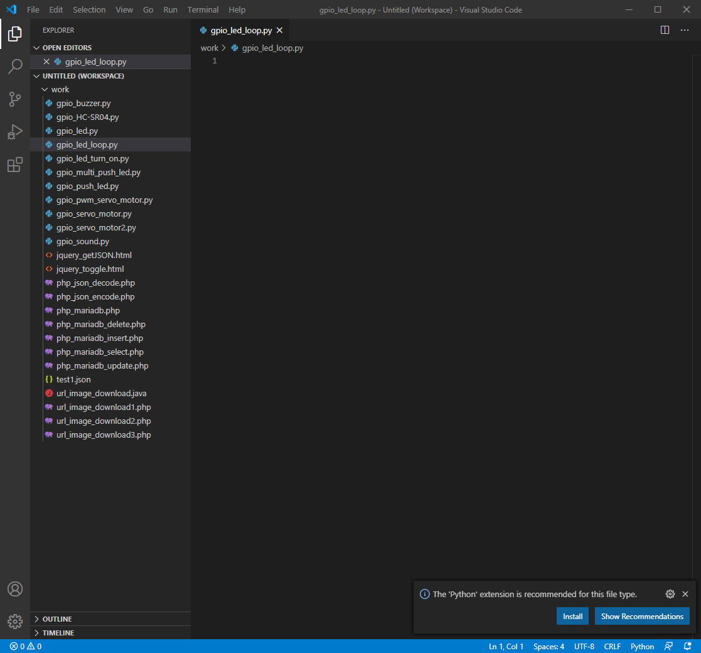
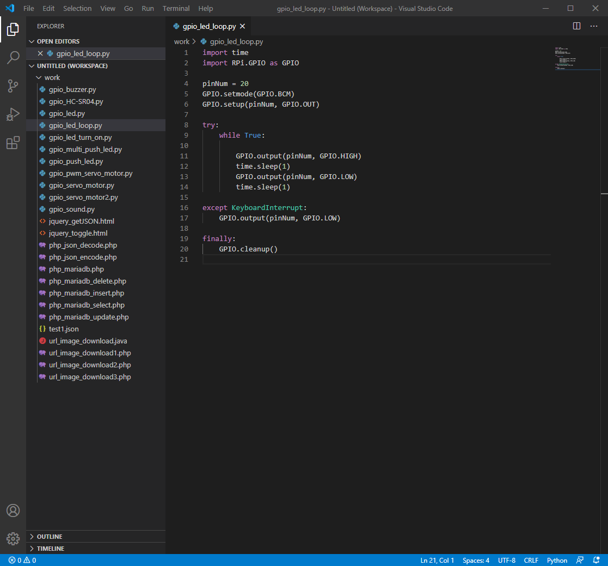
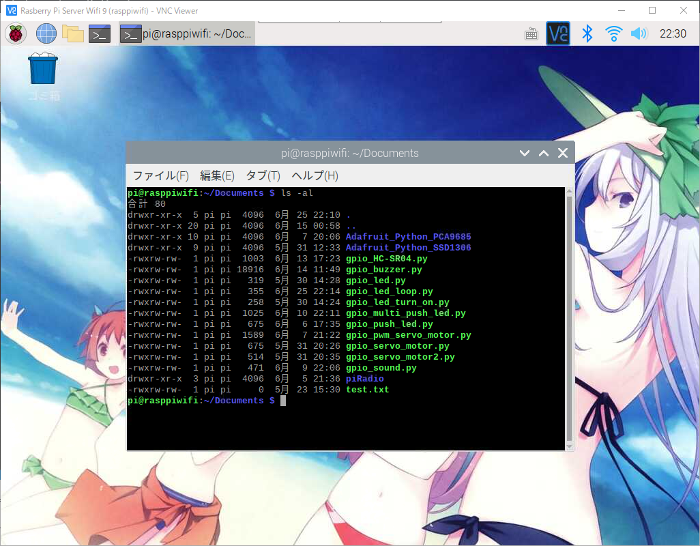
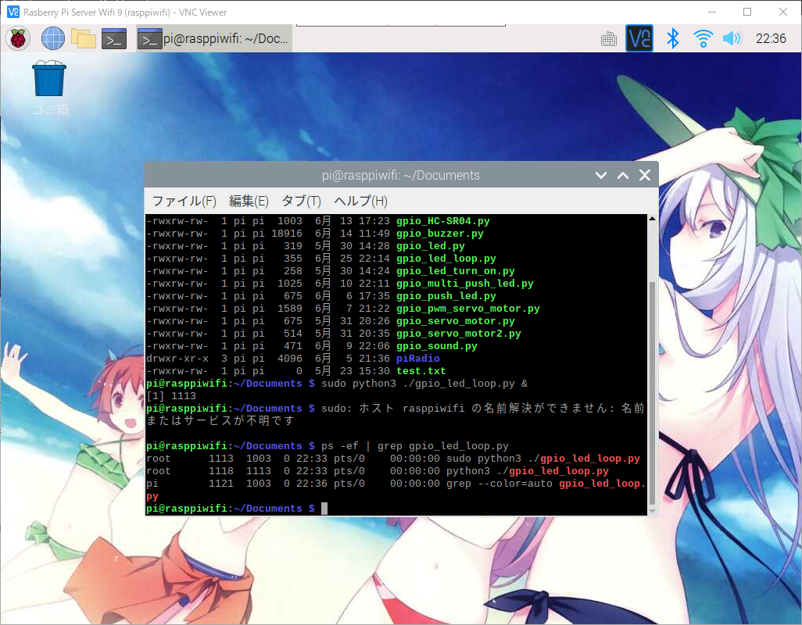
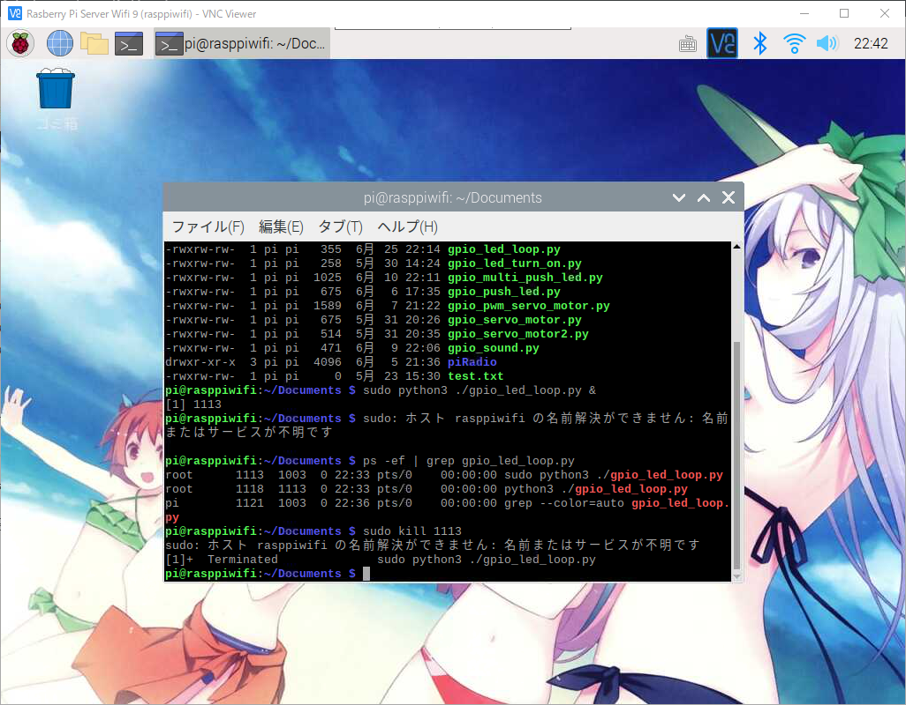
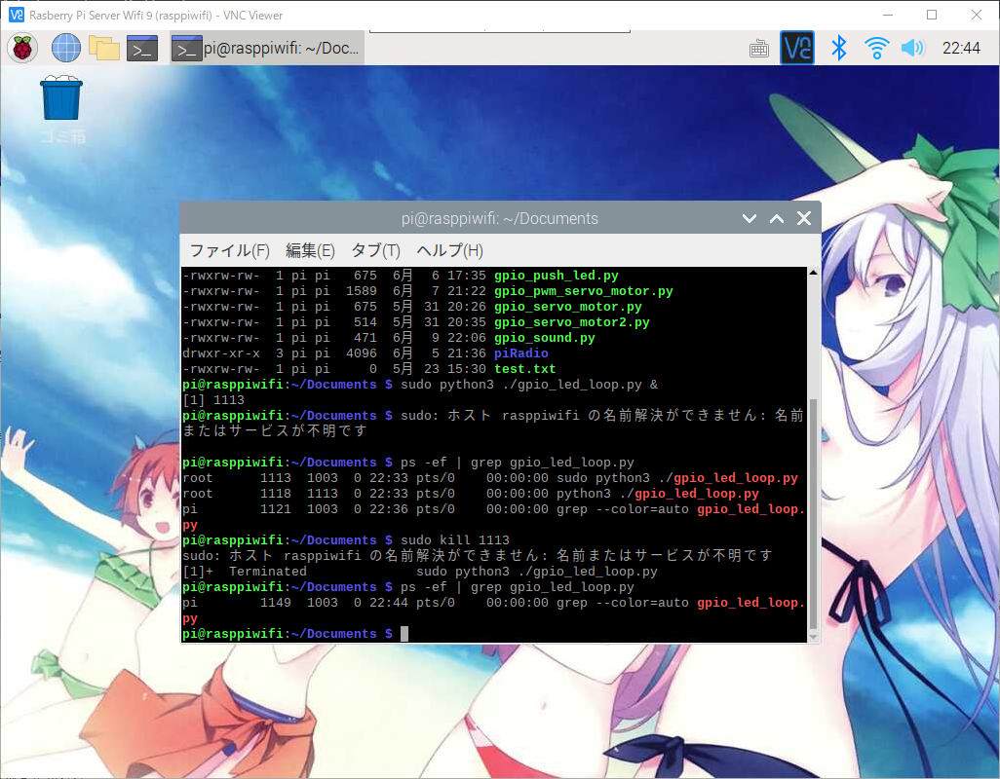

라즈베리파이에서 실행중인 프로세스 강제종료 시키기
라즈베리파이에서 실행중인 프로세스 강제종료 시키기
안녕하세요. AkibaTV입니다.
이번에 소개할 내용은 라즈베리파이에서 실행중인 프로세스 강제종료 시키기 입니다만
라즈베리파이 뿐만 아니라 리눅스도 포함되는 내용 입니다.
배치프로그램을 개발하거나 자바프로그램을 라즈베리파이 또는 리눅스에서
백그라운드 상태로 실행중인 경우 급하게 프로세스를 종료를 시켜야 하는 경우가 발생할수가 있습니다.
그럴경우에 어떻게 프로세스를 찾고 강제로 종료를 시키는것인지 알아보도록 하겠습니다.
우선 프로그램을 무한루프로 실행할 샘플 코드를 작성을 하도록 하겠습니다.
샘플코드는 이전에 소개해 드린 라즈베리파이에 GPIO와 파이선을 이용해서 LED를 켜보자 입니다.
간단하게 만들어서 무한으로 LED가 켜지고 꺼지게 실행중에
프로세스를 강제종료를 해보도록 하겠습니다.
Visual Studio Code(비주얼 스튜디오 코드)를 실행해 주시고 파일명은 gpio_led_loop.py로 합니다.

아래와같이 코딩을 해주시기 바랍니다.
1 | import time |

작성을 하셨으면 라즈베리파이에 파일을 올려주시기 바랍니다.
그리고 라즈베리파이를 VNC를 이용해 접속후 터미널을 실행해 주세요.

이제 작성한 LED점등 소스를 실행을 해보도록 하겠습니다.
아래의 명령어를 입력해 주세요.
이번에 실행 명령어는 마지막에 “&”를 추가를 해줍니다. “&” 하고 실행을 하시면
프로그램을 그냥 실행하는게 아닌 백그라운드로 실행을 하게 되며 라즈베리파이에서 로그아웃을 하셔도
프로그램을 라즈베리파이가 켜져있는한 계속 돌아가게 됩니다.
1 | # 파이썬 2.x버전대를 이용하실경우 |
1 | # 파이썬 3.x버전대를 이용하실경우 |
위와같이 아무키나 눌렀음에도 LED는 계속 켜지고 꺼지는것을 보실수가 있습니다.
그럼 프로세스가 정상적으로 실행중인지 알아보겠습니다.
아래의 명령어를 입력해 주세요.
1 | # gpio_led_loop.py 파일명으로 실행중인 프로세스 검색 |

1 | root 1113 1003 0 22:33 pts/0 00:00:00 sudo python3 ./gpio_led_loop.py |
위와같이 실행중인 항목이 나오는것을 확인 하실수 있습니다.
이제 프로세스를 종료하는 방법은 root다음에 오는 첫번째 숫자가 실행중인 프로세스의 pid값 입니다.
아니면 프로그램을 실행하실때 출력한 [1] 1113도 똑같은 pid값이 됩니다.
pid값을 확인을 하셨으면 아래의 명령어를 이용해서 프로세스를 강제로 종료 하실수가 있습니다.
1 | # 1113은 실행할때마다 나오는 pid값을 입력 |

프로세스를 강제 종료하시면 위와같이 나오면서 프로세스가 종료되고 LED점등도 멈춘것을 확인하실수 있습니다.
그럼 다시 프로세스 검색을 해서 프로세스가 종료되었는지 확인해 보도록 하겠습니다.
1 | # gpio_led_loop.py 파일명으로 실행중인 프로세스 검색 |

위와같이 프로세스가 종료되어 있는것을 확인 하실수 있습니다.